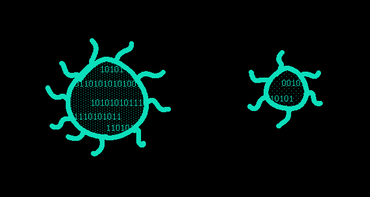
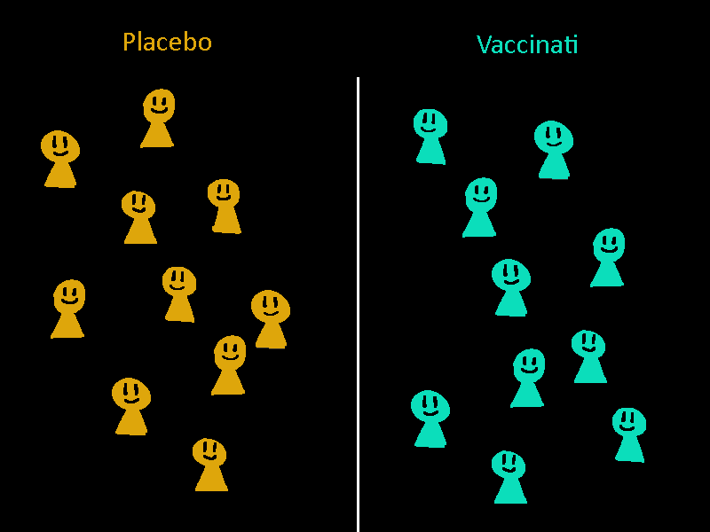
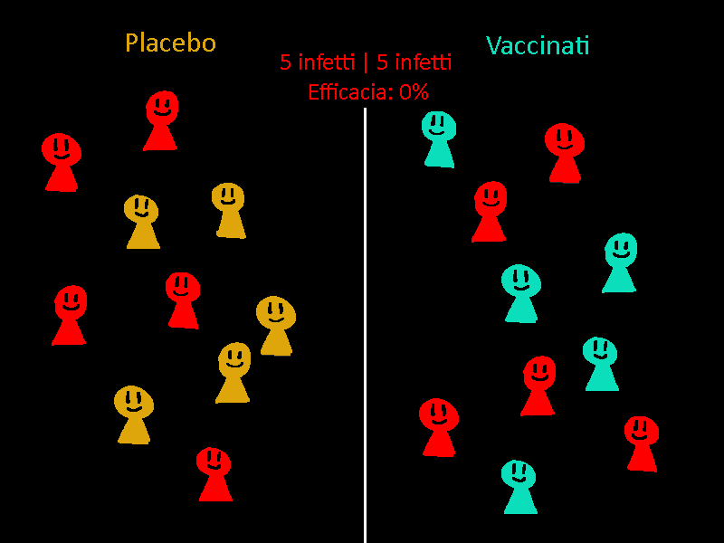
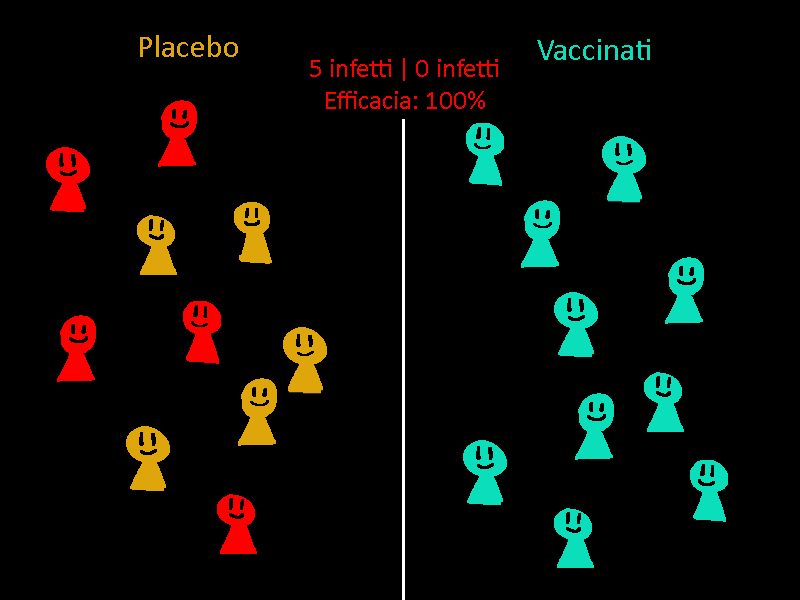
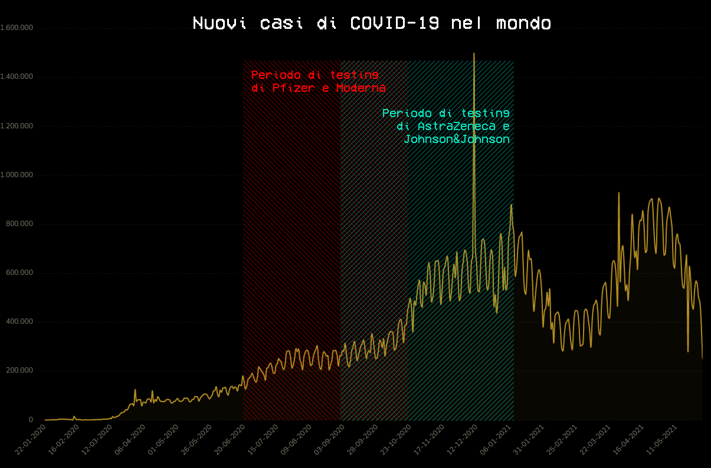

Pfizer, AstraZeneca, Moderna, Johnson&Johnson...
Perchè, in fondo, non importa quale vaccino prendiamo.
Analizziamo innanzitutto i tipi principali di vaccini per il COVID-19 :
Astrazeneca, Johnson&Johnson, Sputnik : Vettori virali ingegnerizzati

La stessa tipologia di molti vaccini già esistenti, come quello per l’epatite B.
Si tratta di virus ingegnerizzati per risultare all’organismo simili al virus che si vuole combattere,
senza portarne lo stesso rischio.
Abitua l’organismo a combattere il virus, garantendo un’alta
efficacia e una copertura a lungo termine, ma può avere lievi effetti collaterali.
Pfizer-BioNTech, Moderna : mRNA ingegnerizzato
RNA messaggero o mRNA, specificamente programmato
per istruire l’organismo
ad identificare e combattere il virus.
Esso è prodotto naturalmente nelle nostre cellule
a partire dalla sequenza del DNA ogniqualvolta la cellula debba sintetizzare una proteina.
Quello contenuto nel vaccino, è un analogo sintetico dell’mRNA che il virus utilizza nelle
cellule infette per produrre la proteina Spike contenuta nel virus.
Il vantaggio è che il vaccino non causa nessuna infezione, ma fornisce alle cellule solo
le istruzioni per produrre la proteina Spike.
Pensandoci, è in molti modi simile ad installare aggiornamenti di sicurezza su un computer.
------------------------------
Non è una tecnologia nuova, creata nella fretta:
Esso è frutto degli studi di una ricercatrice ungherese, Katalin Karikó, che circa trent’anni fa intuì
la possibilità di attivare la risposta immunitaria dell’organismo iniettando l’mRNA che codifica per
l’antigene di un patogeno.
------------------------------
Pfizer e Moderna hanno un’alta percentuale di efficacia,
intorno al 95%,
mentre AstraZeneca e Johnson&Johnson si aggirano sul 66%.
E’ naturale pensare quindi che quest’ultimo tipo di vaccino sia peggiore del primo, ma non è del tutto vero.

Per determinarne l’efficacia, nella terza fase di testing il vaccino viene somministrato a
decine di migliaia di volontari, la metà di cui riceve però un placebo;
Vengono quindi lasciati
liberi di vivere normalmente.
Dopo qualche mese, viene contato il numero di infetti nei due gruppi:
il rapporto del numero degli infetti dei due gruppi va a determinare la percentuale di efficacia.


per esempio, con 10 individui su ciascun lato, con 5 infetti da entrambi i lati, l'efficacia sarà 0%, mentre se avremo infetti dal lato placebo,
e nessun infetto dal lato vaccino, l'efficacia sarà del 100%.
------------------------------
Tutti i vaccini approvati al momento sono stati sottoposti allo stesso tipo di test,
il problema sta nel contesto in cui questo è stato effettuato.

Pfizer e Moderna sono stati testati su un gruppo di persone provenienti prevalentemente
dagli stati uniti, nel periodo fra l’estate e l’autunno,
in cui la curva delle infezioni è rimasta relativamente bassa;
Johnson&Johnson e AstraZeneca, invece, sono stati testati in diversi paesi, fra l’autunno e l’inverno,
proprio quando le infezioni hanno raggiunto il loro picco, e quando sono iniziate ad apparire
varianti del virus.
------------------------------
In ogni caso...
Nonostante nessuno di questi vaccini possano prevenire al 100% l’infezione,
essi eliminano praticamente del tutto la possibilità di sintomi gravi o letali al virus.
In questi stessi
test infatti,di coloro che sono stati infettati dopo aver ricevuto il vaccino, nessuno ha avuto sintomi
tali da portare all’ospedalizzazione o alla morte.
A differenza di come molti credono, l’obiettivo principale
del vaccino non è quello di prevenire del tutto gli effetti del virus, ma di armare
il corpo, in modo da ridurli ad un innocuo malanno.
di Giacomo Palombo, I.I.S. Via Copernico, 4AL, A.S. 2020/2021